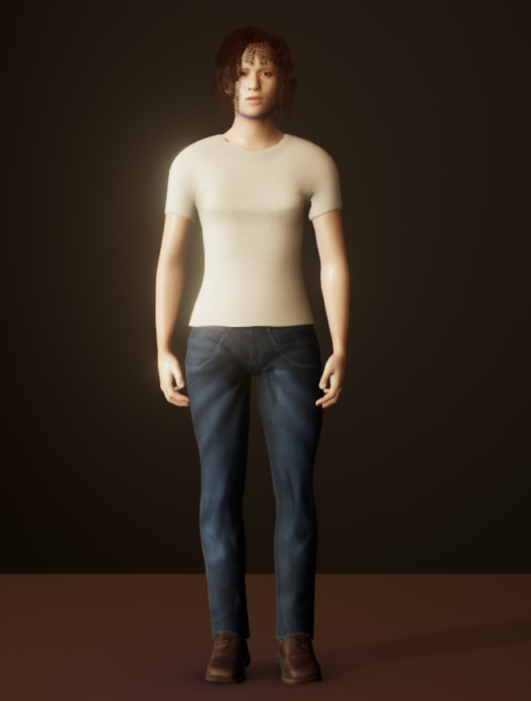
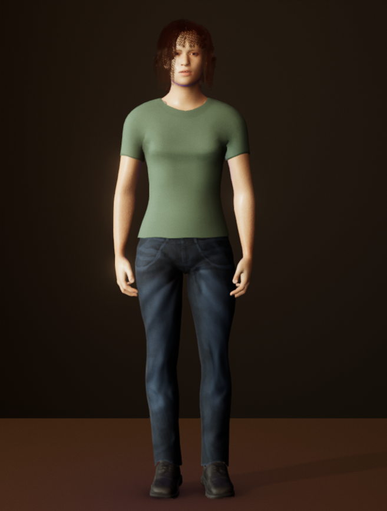
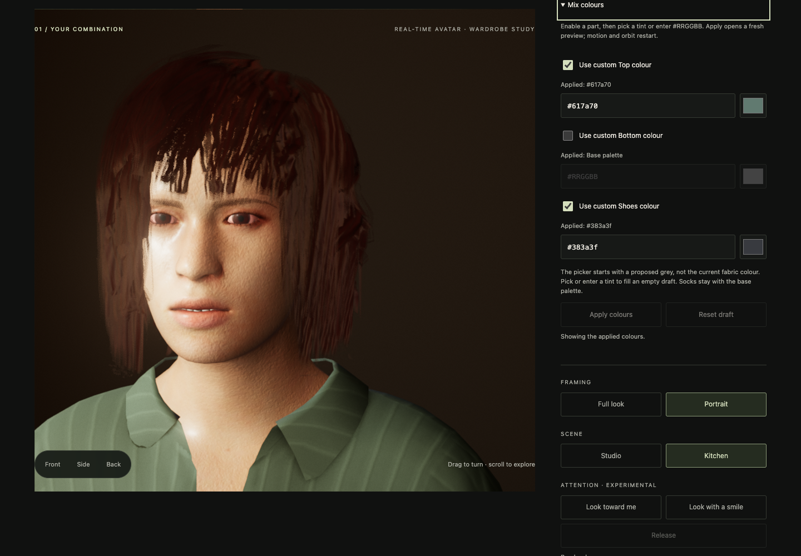
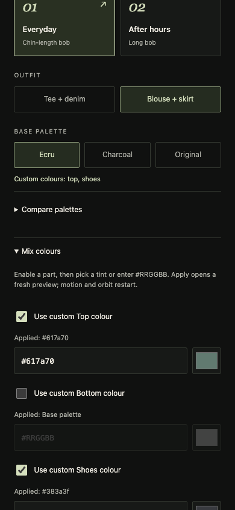

A direction to review · September 26
Custom colour controls.
Prototype — not in the live Wardrobe yet
Choose which pieces to recolour. Keep the rest of a palette, then apply the combination when it is ready.
01 / The idea
Keep some colours. Change others.
Casual outfit · Kitchen
This captured example changes the Top to sage and the Shoes to a dark grey. The Bottom stays with the Ecru base palette.


Ecru base
The starting palette, in a captured view.


Top + Shoes changed
Two custom colours; the base denim remains.
02 / The controls
A draft before a change.
The prototype’s controls and settings paths passed their focused desktop and phone checks. The visual qualification is still separate.
- 1
Choose the parts
Start with Ecru or Charcoal. Enable a custom Top, Bottom or Shoes colour and use the picker or a hex value. Unselected parts keep their base colours.
- 2
Apply when ready
Editing a draft leaves the preview alone. Apply colours opens a fresh preview; motion and the camera orbit restart.
- 3
Keep the combination
Save the applied look by name, or download its settings. Choosing a whole palette again clears custom colours, including when you select the current base.
03 / Captured interface
The applied colours stay explicit.


Desktop control check · A mixed outfit carries the applied Top and Shoes colours. This is an original viewport screenshot.
04 / On a phone
The same choices, one column.
Each part has its own enable checkbox and value. The interface shows whether a colour is applied or still belongs to the base palette.
Custom colours are available on Ecru and Charcoal in this prototype. Original keeps its existing materials. Socks stay with the base palette.
Open the full phone capture ↗

Phone control check · Original 390 × 844 viewport.